
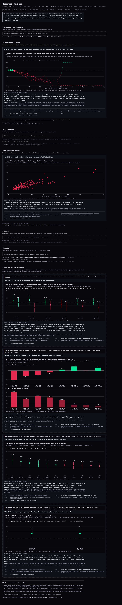
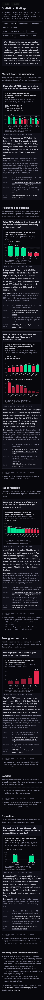

28 Sep 2026 · lane stats-tab · branch hub/stats-tab-20260928 · design + a working prototype · built from the two published studies only (S8 the ladder, S9 the research program, both 27 Sep) · nothing here predicts
The Hub already has plenty of numbers. What it does not have is a place where a finding from the statistics work survives the session that made it. Today the S8 and S9 pages are long research documents: 105,000 characters for the ladder, 46,000 for the program. They are the right thing for the study; they are the wrong thing to open at 09:35 to remember what the market usually does after a 5–10% dip.
So the tab is a small, fixed set of findings cards. A card is one question, one chart, one plain sentence with the numbers, one line on how sure the number is, the sample and dates, the study it came from and who checked it. Six themes, in Alan's order: market first (the rising tide) · pullbacks and bottoms · RSI percentiles · fear, greed and macro · leaders · execution. A theme with nothing reviewed under it says so, in a dashed box, rather than filling itself.
It is not a library of every study (that is the prototypes page), not a live indicator (nothing on it updates intraday; a card changes only when a study is re-run and re-reviewed), and not a set of buy rules (every card is a research question with a measured answer, and the sentence says how sure).
| A card needs all of these | Where it is checked |
|---|---|
| A stated question, phrased as a question | tests/stats-tab.test.mjs · “every card carries the five things a finding needs” |
| A measured answer with its uncertainty: a range, or the honest count when the bucket is too small for a rate (“20%+ has 4 declines, which is a list, not a rate”) | same test: the answer and the uncertainty must each carry a number |
| A saved chart in both sizes, dated in its file name and inside the picture, parsing as XML | same test, plus the build refuses to write a card without one |
| The sample: instrument, date range, days and episodes | same test |
| A link to the study page and to its numbers file, both existing on disk | same test |
| Its method: what the horizon is and how the condition is cut | same test: method.horizon and method.cutoffs are required |
| A named review (a second lane, or a second method or instrument inside the study) that was not part of how the finding was chosen | same test; review.status |
| To be on the tab and not held back: a pivot/swing horizon (never a fixed count of sessions), the condition read over its full distribution (percentiles 1..100, every whole percent, every record — never a forced cut-off), and a review as above | entry.mjs entryFaults(); the build moves a failing card into heldBack with its reasons; the test holds the tab to it |
| Never on the tab | Why |
|---|---|
| A raw table or a JSON dump | That is the study page's job. The tab shows one picture per question. |
| A study nobody reviewed | Today's in-flight lanes (rsi-full-history, market-regime, rsi-ladder, bottoms, leaders, scout) appear by name only, under “measuring now”, until a second lane has read them. The test holds that a candidate lane's name never appears as a card id. |
| A number without a chart, or a chart without a date | Alan: “graphics that get saved.” A picture that cannot be found again in a folder is not saved. |
| A grey line or bar | The 23 Sep rule: daily up green, down red; a share green above its any-day line and red below; a fear measure in red. The drawing code throws on a mark with no reference, rather than painting it grey. |
| A buy rule, a fixed window, a forced cut-off | Alan, 28 Sep: percentiles 1..100, pivots, own history — research questions, not rules. A card built on “up after 20 sessions” or “the bottom 10%” is held back until it is re-measured, with that reason printed on it. |
| A bar that starts above zero | A raised floor makes a 3-point gap look like a wall (the first cut drew 59.4% vs 56.4% about 47% taller). Bars start at zero; a share against its any-day line is a dot with its 95% range, or a diverging bar of the difference. barsPanel() throws on a raised floor. |
| A thirteenth card | At most twelve. A new card that answers an old question replaces the old one; the old chart stays in its study folder. That is the dump-yard guard. |
| Rule | Value |
|---|---|
| File name | YYYYMMDD-<theme>-<question-slug>-<1200|390>.svg, e.g. 20260928-pullbacks-spy-depth-to-new-high-1200.svg. The date is the build date; the theme is one of the six; the slug is the card id. |
| Where | charts/ next to the page that shows it. A card links its own file (download) and the page inlines the same bytes. |
| Format | SVG (text, diffable in git, crisp at any size). A PNG export can be added by the screenshot script when a picture must go to Notion or a phone; the SVG stays the source. |
| Sizes | 1200 × 440 for the desk (two-panel charts 1200 × 660); redrawn at 390 wide for the phone with 13px labels, rotated axis labels when eight or more groups, rounded value labels when bars are under 40px. Never a shrunk desk chart: 12px text at a third of its size is 4px. |
| Surface and greys | Background #07070C, panel #0F0F18, hairline #2A2A36, ink #C8C8D2, muted #8A8A9E, faint #5C5C6C. Every grey has its channels within 24 of each other and none above 210; no white. The test holds every hex on the page to that rule. |
| Direction colours | Up #00FFA3 · down #FF2D55, the S8/S9 colours. A share is green at or above its own any-day line, red below it. A gain is green, a loss red. A fear measure (VIX, a drawdown share) is red, darker when higher. Two series are told apart by texture (solid vs 45° stripes), never by hue, so hue keeps one meaning. |
| Dots and ranges | For a share against its any-day line: the dot is the share, the vertical line its 95% range (the study's own month-clustered range where published). Green or red by the dot's side of the line. Hollow when the range crosses the line: that reading cannot be told apart from chance. A second series is a diamond, not a second hue. |
| Curves and scatters | For a condition that runs over a full scale (“has fallen X% so far”, every whole percent to the deepest decline): one line per instrument told apart by dash (solid, long dash, dots), each point coloured against that instrument's own line, and faded by its count so a thin tail shows as thin rather than being cut off. A scatter draws one dot per record. |
| Text | Title 16px bold, subtitle and labels 12px mono (13px on the phone), footer 11.5px. Nothing under 11px. Values printed in ink with a dark halo, never in the series colour. Axis ticks are round numbers (40, 50, 60), never 53, 65, 78. |
| Inside every file | The title, the subtitle (what is measured and what green/red mean here), a legend for any second series or reference line, and a footer: study · study date · instrument · date range · build time · card id. The picture stands alone in a folder. |
| Reference lines | The any-day line dashed in ink, named in the legend, never labelled on the plot (it collided with values in the first cut). |
| Hover | Every mark (bar, dot, point) carries a <title> (native tooltip) and a data-tip that the page repeats in a readout line under the chart, so a phone tap reads the same count and range. |
| One drawing module | charts.mjs: pure functions, tested on a fixture with numbers chosen so every colour can be worked by hand. A new chart kind is a new function there, not a new page. |
| Where | Question | Study · the field |
|---|---|---|
| On the tab · Pullbacks and bottoms | Once SPY has fallen X% from its last swing high, how often did the next swing go on to make a new high? | S9 instruments.{SPY,QQQ,IWM}.all[].depth / .newHigh: for every whole X from 0 to the deepest decline, the share of declines at least X% deep whose next swing high beat the prior one |
| On the tab · Fear, greed and macro | How high was the VIX at SPY's swing lows, against how far SPY had fallen? | S9 instruments.SPY.all[].depth / .vixLow, one dot per decline; rank correlation computed the same way on QQQ and IWM |
| Held back · Market first | Does a low SPY RSI mean more when SPY is above its 200-day than below it? | S8 ladder indexes.SPY.rows["rsi<=T|on|20"] / ["…|off|20"] with their month-clustered ci and shuffle. Fixed 20 sessions, fixed RSI steps. |
| Held back · Pullbacks and bottoms | How far below its 200-day does SPY have to be before “deep below” becomes a problem? | S9 band.SPY.full.bands[].up60 / .mdd60Bad; drawn as points vs any day. Fixed 60 sessions, fixed bands. |
| Held back · RSI percentiles | Does a stock's own low RSI beat any day, and how far down its own ladder does the edge last? | S8 stocks.states[0].rows[] with the ladder's names.fwd["rsi<=T|all|20"].ep.ci. Fixed 20 sessions, fixed steps. |
| Held back · Execution | What did the best-scoring entry combination do, and has it been tested on data it was not chosen on? | S8 ladder combos.chosen[0] (tested = 1,159; rule: score = the smaller of the two halves' lift). Not reviewed: both halves chose it. |
| Leaders | — no finding yet; the leaders lane (S9 E1) is measuring today | shown as a candidate name only |
The only arithmetic added on top of the published files: shares over the published per-decline records (the curve and the all-declines lines), a Wilson 95% range on a share and count where the study publishes none (marked as not clustered wherever it appears), and a Spearman rank correlation over the per-decline records. The tests re-read the JSON files and check the headline numbers in every answer against them.
| Finding | What was wrong | What changed |
|---|---|---|
| Best combination called “held” and “checked” | S8 scored every candidate on the smaller of its two halves' lifts and picked the best of 1,159, so both halves chose it; neither is a check. | The answer now says “best of 1,159, chosen on the weaker of its two halves; no untouched period was held back”; the review reads “none”; status unreviewed; held back. Chart: dots and ranges, titled “not a hold-out test”. |
| Market-first card answered “Yes” | It quoted the all-days range, not the two compared. The published ranges (62.9–86.2% above, 40.8–66.3% below) overlap and each contains its own any-day line; the steps disagree with each other. | “Not in a way that can be told apart from chance, at any step”, both ranges and their overlap quoted, all 12 ranges drawn (all 12 cross their line, so every dot is hollow). Held back (fixed window). |
| Four cards on fixed windows and cut-offs | Cards 1, 3, 4 and 6 used “after 20/60 sessions” and “bottom X%”, which this tab's own rules forbid. | An entry rule in code (entry.mjs): a card must state its method, and only a pivot horizon with a full-distribution cut goes on the tab. The four are held back with the reason printed. |
| Stock RSI “8–20 points wide” | Typed into the build, not read from a file; the stock row's own range (56.3–62.5%) reaches below the any-day 56.4%. | Quotes 56.3–62.5% and says it touches the line; the invented sentence is gone; the dot is hollow. |
| Pullback depth known only after the low | Buckets by finished depth; a trader 4% down cannot know the bucket. | Replaced by “has fallen at least X% so far”, every whole percent, which is known during the fall. |
| Pullback review did not check the claim | S9's sensitivity has counts, not new-high shares, and the 10%+ count does move (28 → 23 at a 20-bar pivot); QQQ and IWM contradict SPY's deep end. | QQQ and IWM are drawn on the same chart; the answer says SPY's 25.0% at 10% down is not repeated (QQQ 46.4%, IWM 46.3%); the uncertainty quotes 28 → 23. |
| Bars from a raised floor | A 3-point gap drawn about 47% taller. | Bars start at zero (the drawing code refuses otherwise); shares vs a line are dots and ranges; the 200-day band's top panel is a diverging bar of points vs any day. |
The Hub's master tabs are one list in index.html: const SECTIONS = ["DASHBOARD","SCENES","NEWS","SOCIAL","SENTIMENT","ALERTS","SCREENER","EVENTS","USUAL","ECONOMIC"]. buildMtabs() draws a button per entry, roomKey() gives each room a mount key and roomHTML() returns the room's markup. USUAL DAY was added exactly this way on 27 Sep. The proposal is the same move, in two steps, and nothing in the Hub computes a statistic:
"STATS" to SECTIONS after "USUAL"; buildMtabs() then draws it with no other change (label “STATS”).roomKey(): case "STATS": return "STATS"; — one mount, like USUAL.roomHTML(): case "STATS": return statsRoomHTML(); where statsRoomHTML() fetches /data/stats/findings.json (the manifest, moved from this folder into data/ when Alan approves the tab) and, per card, inlines the saved SVG by fetching its file. The room is the six themes with their cards; an empty theme shows the dashed “nothing reviewed yet” box; candidates show as names. The card markup and CSS are the prototype's, lifted as they are.tests/ holds the Hub's copy of the manifest to the same five-part rule as this prototype's test, so a bad card fails the suite before it ships.Each card carries a theme and an instrument. The dashboard's SPY panel could show the two pullback cards' pictures in a fold-out; the company view's Stats tab could show the RSI-percentile card with the stock's own current percentile marked on it. That needs one more field per card (which live reading marks the chart) and is a separate decision. Not built.
The prototypes library card: scripts/build-prototypes-index.py adds a “Statistics · findings” card pointing at /deliverables/20260928/stats-tab/ with readiness “review”, and the BACK / CLOSE pair is on both pages via scripts/inject-scnav.py (done on this branch).
// the whole Hub change for step 1, in outline (not applied on this branch — proposal only)
const SECTIONS = [..., "USUAL", "STATS", "ECONOMIC"];
function roomKey(){ …; case "STATS": return "STATS"; }
function roomHTML(){ …; case "STATS": return statsRoomHTML(); }
async function statsRoomHTML(){ const m = await (await fetch("/data/stats/findings.json")).json(); /* themes → cards → inline the saved SVG */ }



What is actually visible, having opened each shot (28 Sep, second round; one headless run, killed after). index.html at 1680 (1680 × 8,281, no sideways scroll, smallest HTML text 11px): the title line “2 findings on the tab · 4 held back”, the theme strip (Pullbacks 1, Fear 1, the rest “–”), the status box, then Market first as a dashed empty box with a “held back under this theme” link; the pullback curve with SPY, QQQ and IWM falling from their all-declines lines as the fall deepens; RSI percentiles empty; the VIX scatter of 125 SPY declines rising to the right; Leaders and Execution empty; then the open “Held back from the tab · 4 cards” fold, each card with its red-edged reason line: the SPY above/below-200 dots with every range crossing its line (all hollow), the 200-day band as diverging bars from zero over the drop-share bars, the stock-RSI dots (all eleven hollow), and the best combination titled “not a hold-out test”. At 390 (390 × 12,077, no sideways scroll) the same order stacked, each chart redrawn. Three small changes came after the shots and are not in them (the brief allows one browser run): SPY's legend line drawn solid instead of dashed, the thin tail of the curve faded harder (a single decline now at about 0.2 opacity, so QQQ's one-decline 100% points read as thin), and the all-declines legend label shortened so it fits at 390. The BACK / CLOSE pair is also missing from the index shots: the rebuild had dropped it; the build now places it itself, byte-identical to the shared snippet, and the Hub nav test passes.
index.html was touched.tests/prototypes-catalogue.test.mjs would move; that is the coordinator's merge step), no deploy.Files: index.html (the tab) · findings.json (the manifest: cards on the tab, heldBack with reasons) · charts/ (12 SVG) · charts.mjs (drawing) · entry.mjs (entry rules) · build.mjs (build from the S8/S9 JSON) · shots.mjs (one headless Chrome, several shots) · tests/stats-tab.test.mjs + tests/fixtures/stats-tab-fixture.json